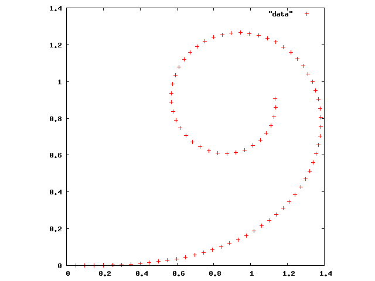

台形公式を用いて
$\displaystyle \int^1_0 4\sqrt{1-x^2}\, dx$
$\displaystyle \int^1_0 \frac{4}{1+x^2} dx$
の近似値を求めるプログラムを作成せよ。ただし、分割数は、 N = 2, 4, 8, 16, 32, 64, 128, 256, 512, 1024, 2048, 4096, 8192, … , 4194304とする。また、真の答えを手で求めておいて、台形公式で得られた答との誤差をそれぞれ求めよ。出力は以下のようになる。
2 2.73205080757 -4.095418e-01
4 2.99570906810 -1.458836e-01
8 3.08981914436 -5.177351e-02
16 3.12325303783 -1.833962e-02
32 3.13510242288 -6.490231e-03
64 3.13929691278 -2.295741e-03
128 3.14078079240 -8.118612e-04
256 3.14130558296 -2.870706e-04
512 3.14149115272 -1.015009e-04
1024 3.14155676654 -3.588705e-05
2048 3.14157996541 -1.268818e-05
4096 3.14158816761 -4.485982e-06
8192 3.14159106755 -1.586040e-06
16384 3.14159209284 -5.607509e-07
32768 3.14159245533 -1.982556e-07
65536 3.14159258350 -7.009397e-08
131072 3.14159262881 -2.478199e-08
262144 3.14159264483 -8.761766e-09
524288 3.14159265049 -3.097735e-09
1048576 3.14159265249 -1.095227e-09
2097152 3.14159265320 -3.872023e-10
4194304 3.14159265345 -1.370015e-10
2 3.10000000000 -4.159265e-02
4 3.13117647059 -1.041618e-02
8 3.13898849449 -2.604159e-03
16 3.14094161204 -6.510415e-04
32 3.14142989317 -1.627604e-04
64 3.14155196349 -4.069010e-05
128 3.14158248106 -1.017253e-05
256 3.14159011046 -2.543132e-06
512 3.14159201781 -6.357829e-07
1024 3.14159249464 -1.589457e-07
2048 3.14159261385 -3.973642e-08
4096 3.14159264366 -9.934098e-09
8192 3.14159265111 -2.483517e-09
16384 3.14159265297 -6.208678e-10
32768 3.14159265343 -1.552523e-10
65536 3.14159265355 -3.881162e-11
131072 3.14159265358 -9.822365e-12
262144 3.14159265359 -2.351896e-12
524288 3.14159265359 -5.706546e-13
1048576 3.14159265359 -2.247091e-13
2097152 3.14159265359 -4.662937e-14
4194304 3.14159265359 -3.579359e-13
発展問題 (余裕のある人だけやること)
道路や線路のカーブはクロソイド曲線を用いて設計されている。クロソイド曲線の長さを $l$ とするとき、曲線の終点の座標は $\displaystyle x(l)=\int_{0}^{l}\cos\frac{\theta^2}{2}d\theta,\ y(l)=\int_{0}^{l}\sin\frac{\theta^2}{2}d\theta$ と表すことができる。数値積分を用いて、$0\le l \le 4$ の範囲でクロソイド曲線を描け。ただし、座標値の有効桁数が6桁程度になるように数値積分すること。グラフは以下のようになる。
